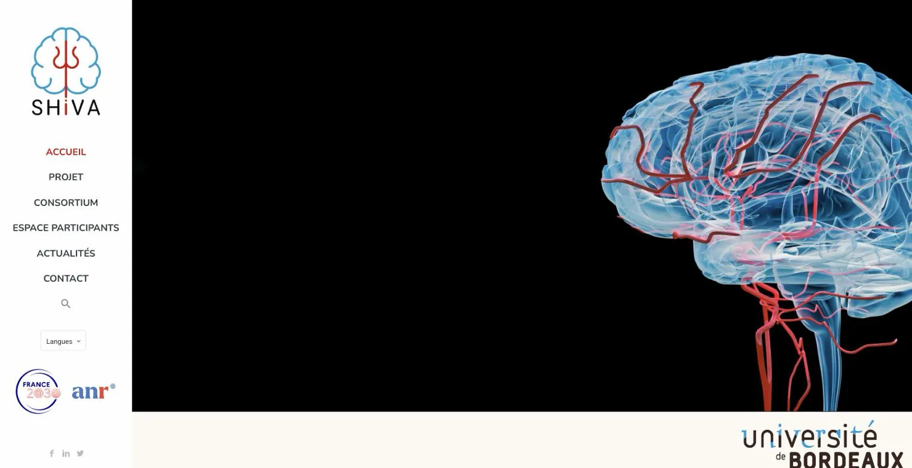

Sites vitrines & institutionnels
Un site qui vous vend
quand vous dormez.
Votre premier commercial est une page web. Nous la construisons sur-mesure, autour de ce que vous vendez et de ceux à qui vous le vendez, pas autour d'un gabarit acheté sur étagère.
- Des pages qui s'affichent avant qu'on ait le temps de s'impatienter
- Un référencement propre dès le premier jour, pas six mois plus tard
- Des textes et des images que vous changez vous-même
